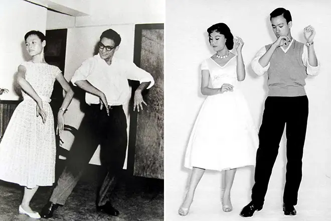
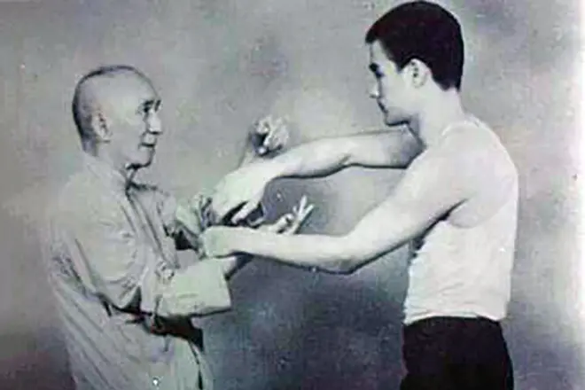
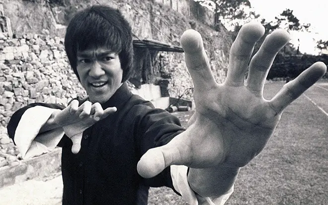
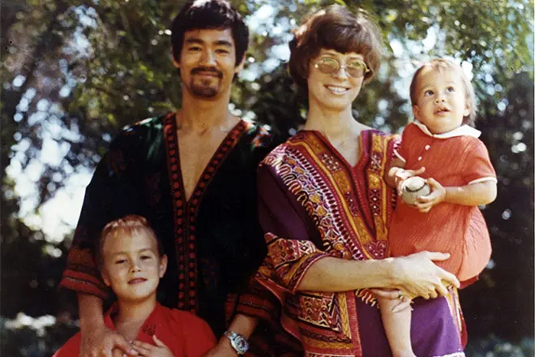
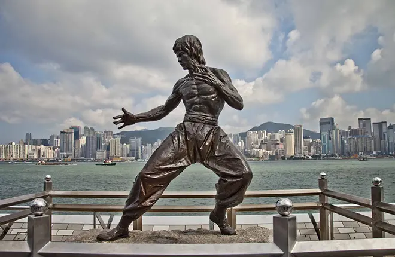

Биография
Брюс Ли – известнейший мастер восточных единоборств, гонконгский и американский киноактер, кинорежиссер, продюсер и сценарист. Его по праву можно назвать человеком-легендой, который благодаря своим умениям обрел огромное число последователей по всему миру.
Родился Брюс Ли 27 ноября 1940 года в городе Сан-Франциско. Его родителями были Ли Хой Чуэн и Грэйс Ли. Глава семейства - актер китайской оперы, который хорошо зарабатывал. Согласно китайскому календарю, мальчик появился на свет в год Дракона и в час Дракона, именно поэтому он получил имя Ли Сяолун, что переводится как Маленький Дракон. По китайским поверьям, у детей должно быть несколько имен, дабы защитить их от злых духов. Впоследствии мать Брюса дала сыну имя Ли Чжэньфань, что означает «возвращайся назад».
Проживающие в Гонконге супруги отправились в Америку на театральные гастроли. А когда стало ясно, что беременная Грэйс больше не может продолжать поездку из-за близких родов, она осталась в Сан-Франциско. Сразу же после родов одна из медсестер предложила назвать мальчика американским именем Брюс: кстати, об этом имени никто не вспоминал до переезда Брюса Ли в Америку. Ребенок рос в Гонконге. Невероятно, но в детстве Брюс был достаточно «хилым» ребенком и, несмотря на то, что интересовался боевыми искусствами, всерьез ими не увлекался. Не отличался парень особыми успехами и в школе.
В 12 лет мальчика отдали на обучение в колледж всестороннего развития «Ля Саль». В 13-летнем возрасте Брюс стал посещать уроки танцев, а спустя четыре года выиграл чемпионат по ча-ча-ча, проходящий в Гонконге. Когда Брюсу Ли исполнилось 19 лет, он решил перебраться в США, тем самым подтвердить полученное им по праву рождения американское гражданство. Сначала он отправился в Сан-Франциско, а затем в Сиэтл, где устроился официантом в один из местных ресторанов. В эти годы он окончил Техническую школу Эдисона, а также пошел учиться на философский факультет Вашингтонского университета.
Спорт
Будучи подростком, Брюс Ли принял решение освоить кунг-фу - эти умения ему были нужны, чтобы постоять за себя в уличных драках. Родители одобрили выбор сына и отдали его на обучение искусству вин-чунь к мастеру Ип Ману. Благодаря танцам парень имел великолепную координацию движений, что и помогло ему в кратчайшие сроки освоить азы техники Тайцзисюань. С этого времени Брюс Ли никогда не оставлял тренировки. Изучаемый Брюсом стиль предполагал борьбу без оружия, хотя в дальнейшем он овладел и им - лучше всего спортсмен обращался с нунчаку.
Позже Ли освоил дзюдо, джиу-джитсу и бокс. Кроме того, внес свою лепту в боевые искусства, разработав новый стиль кунг-фу под названием джиткундо. Кстати, он преподавал этот стиль в собственной школе боевых искусств, которую в 1961 году открыл в годы жизни в Штатах. Уроки стоили недешево (275 долларов за час), но школа Брюса Ли имела одно принципиальное отличие от подобных учебных заведений – в ней обучали всех желающих, независимо от национальности, в то время, как другие мастера брались обучать только азиатов.
Будучи учителем, Брюс сам никогда не прекращал совершенствовать свои навыки в кунг-фу, доводя каждое движение до совершенства. Он даже создал свою систему питания, позже были опубликованы его методики тренировок, снискавшие популярность во всем мире.
Фильмы
- Сирота
- Любовь
- Это отец виноват
- Верная жена
- Игра смерти
- Путь дракона
- Кулак ярости
- Гроза
- Большой босс
- Башня смерти
Личная жизнь
В 1964 году Брюс Ли женился на Линде Эмери. Со своей будущей женой он познакомился во время собственных лекций – 17-летняя студентка посещала уроки по кунг-фу. В браке у пары появилось двое детей. В 1965 году Линда подарила Брюсу сына, которого назвали Брендоном, еще через четыре года у супругов появилась дочь Шэннон.
К сожалению, судьба сына Брюса Ли сложилась трагически. Брендон Ли пошел по стопам отца и стал актером и мастером боевых искусств. В 1993 году он погиб прямо на съемочной площадке – пистолет, из которого в кадре стреляли в актера, по случайности оказался заряжен боевым патроном.
Смерть
В возрасте 33 лет Брюс Ли неожиданно скончался. Смерть наступила 20 июля 1973 года, это событие стало шоком для всего Гонконга, а также поклонников звезды по всему миру. Согласно официальной версии, смерть наступила в результате отека головного мозга. Причиной отека якобы стала таблетка от головной боли, принятая актером. Тело Брюса было переправлено и захоронено в Сиэтле.
Поклонники не желали верить в такую нелепую смерть своего кумира, что привело к рождению массы слухов о том, как именно умер Ли. Одна из таких версий говорила в пользу убийства актёра другим мастером, который не хотел, чтобы он учил боевым искусствам европейцев и американцев. Впрочем, подобные слухи не нашли подтверждения.